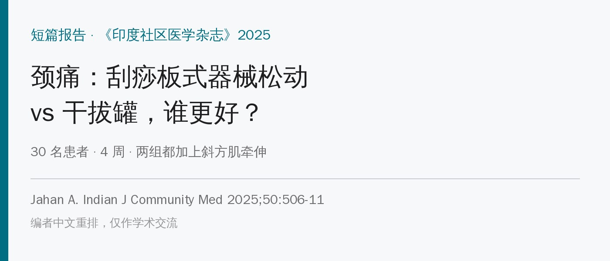
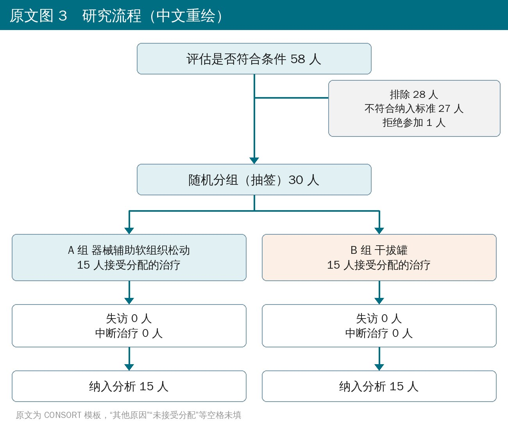
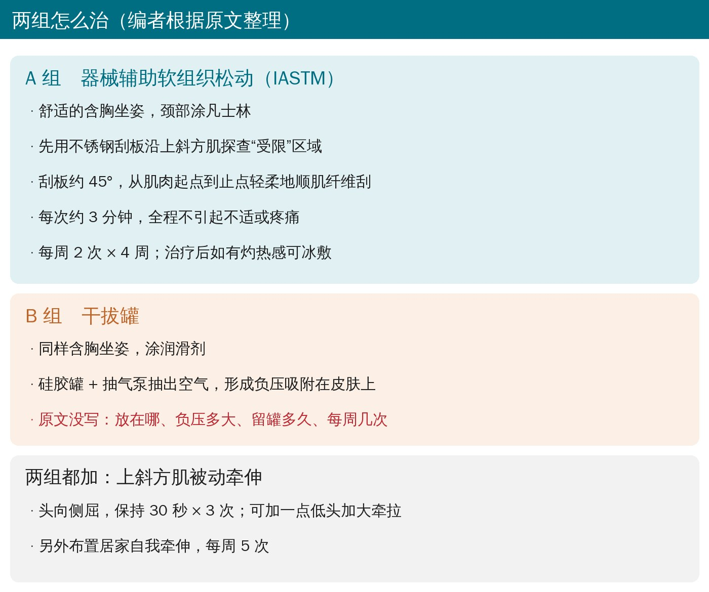
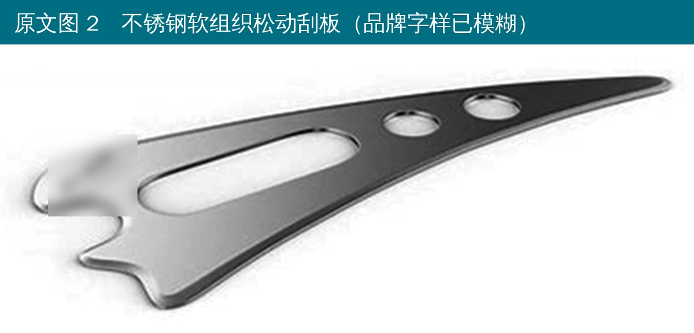
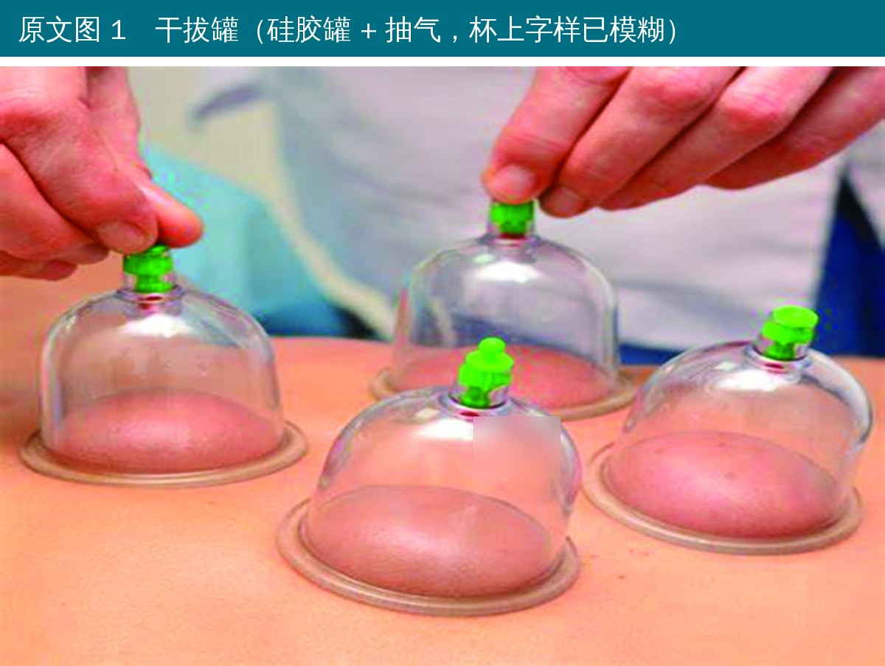
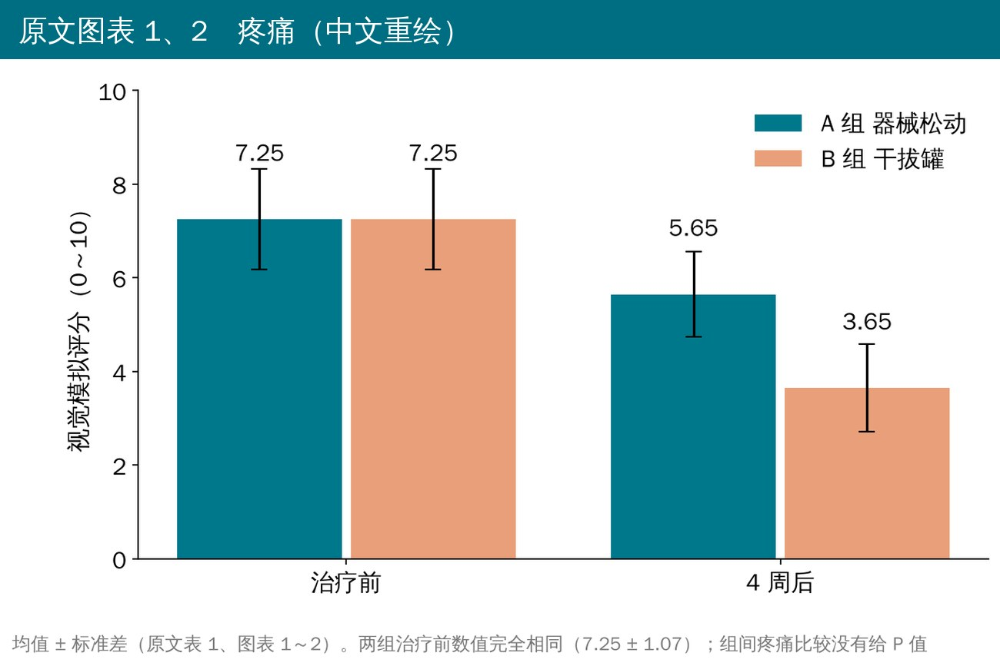
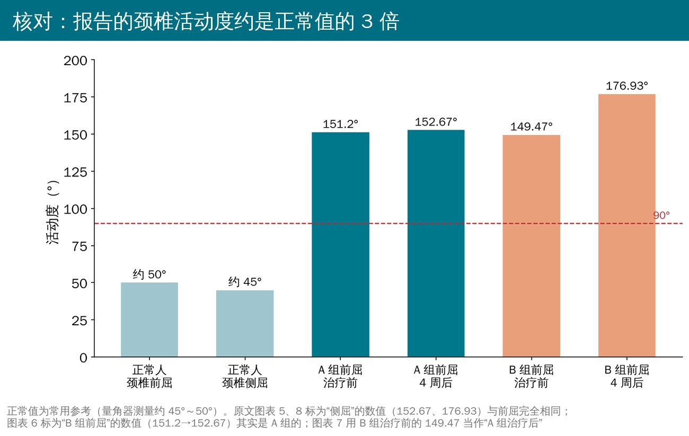

🔖原文信息（编者中文重排）
📚 文献信息
▪ Jahan A. Effectiveness of Instrument-assisted Soft-tissue Mobilization Versus Dry Cupping on Pain and Cervical Range of Motion in Treatment of Neck Pain. Indian J Community Med. 2025;50(3):506-511.
▪ 作者来自印度奥兰加巴德 Dhaneshwari 物理治疗学院
▪ 短篇报告，两组比较研究（抽签分组）；DOI：10.4103/ijcm.ijcm_834_23
题目很吸引人：颈痛用器械辅助软组织松动（用不锈钢刮板沿肌肉刮，常被叫作“筋膜刀”）好，还是用干拔罐好？作者结论是拔罐更好。
但这篇的数据问题非常严重：报告的颈椎前屈活动度是 150°～177°，而正常人用量角器测颈椎前屈只有 45°～50° 左右；8 张结果图里实际只有 4 组数字反复出现，标成“侧屈”的图用的是前屈的数字。拔罐组到底怎么做的（拔哪、多大负压、留多久、一周几次）也没写。
所以这篇推文的重点不是“拔罐更好”，而是：两种手法原文写了什么、可以怎么借鉴，以及读这类文章时要核对哪些地方。

🔖原文图 3 研究流程
• 对象：私人物理治疗诊所，30 名 20～45 岁颈痛患者（2 男 28 女），颈痛超过 2 周，视觉模拟评分 ≥ 5
• 排除：颈椎骨折等外伤史、颈椎手术史、强直性脊柱炎和骨髓炎等（原文把强直性脊柱炎写成了“慢性感染”）、对治疗有禁忌
• 抽签分组，每组 15 人；治疗 4 周
• 结局：视觉模拟评分（疼痛）、量角器测颈椎前屈和侧屈；第 0 天和第 4 周末各测一次

🔖两组的治疗方案
• 体位：舒适的含胸坐姿，颈部涂凡士林
• 先用刮板沿上斜方肌探查“受限”的地方
• 刮板倾斜约 45°，从肌肉起点到止点顺着肌纤维轻柔地刮，每次约 3 分钟，全程不引起不适或疼痛
• 每周 2 次 × 4 周；治疗后如果有灼热感，可以冰敷

🔖原文图 2 不锈钢刮板
• 同样含胸坐姿，涂润滑剂
• 用硅胶罐，靠抽气泵抽出空气，形成负压吸附在皮肤上
• 没有写：放在哪里、负压多大、留罐还是走罐、每次多久、每周几次——别人没办法照着做

🔖原文图 1 干拔罐
• 治疗后做上斜方肌被动牵伸：头向一侧侧屈，保持 30 秒 × 3 次；需要时加一点低头，加大牵拉
• 另外布置居家自我牵伸，每周 5 次
• 原文只写了“向左侧屈”，没有说明是不是按疼痛侧调整

🔖疼痛评分（原文表 1、图表 1～2）
• 疼痛：器械松动组 7.25 → 5.65，拔罐组 7.25 → 3.65，作者据此认为拔罐更好
• 但两组治疗前的均值和标准差完全一样（7.25 ± 1.07），疼痛的组间比较没有给 P 值
• 活动度：见下图，数值本身就不可信

🔖报告的颈椎活动度 vs 正常参考值
原文里对不上的地方：
• 颈椎前屈 149°～177°：量角器测颈椎前屈正常约 45°～50°，侧屈约 45°，原文数值不可能成立；标准差 93.45、88.38 也大得离谱
• 8 张图只有 4 组数字：图表 5、8 标为“侧屈”的 152.67 → 176.93 和前屈一模一样；图表 6 标为“B 组前屈”的 151.2 → 152.67 其实是 A 组的；图表 7 拿 B 组治疗前的 149.47 当“A 组治疗后”去比较
• 表 1 中 A 组前屈治疗后写 152.27，图表写 152.67；表中“n”栏大多空着
• 两组治疗前疼痛完全一样（7.25 ± 1.07），像是复制粘贴
• 器械松动组疼痛平均降 1.6 分（标准差约 1），15 人做配对比较通常 P 远小于 0.031；结果 P 值可信度存疑
• 统计部分只列了“N、M（中位数）、SD”的定义，没写用了什么检验；人口学资料说收集了，但没有报告
• 拔罐组方案几乎空白；结论写“一次拔罐就能即时减轻疼痛”，可研究测的是 4 周后
• 图 2 的刮板图片来自商业网站，图 1 也像是网络图片
• 引言里说拔罐能治贫血、血友病，促进消化液分泌、增强免疫等，没有可靠依据
• 只有 30 人、单中心、单一作者，没有盲法，没有随访
• 两组都做了牵伸和居家牵伸，看不出手法本身的作用
• 28 名女性、2 名男性，性别极不平衡
• 这篇不能作为“拔罐比筋膜刀好”的证据
• 可以借鉴的是 A 组的器械松动细节：上斜方肌、刮板约 45°、起点到止点、约 3 分钟、无痛、每周 2 次，再配合 30 秒 × 3 次的上斜方肌牵伸
• 无论用哪种手法，颈痛的长期管理还是要靠主动训练（深层颈屈肌、肩胛稳定、姿势与工作习惯）
• 读类似文章时，先看活动度、疼痛等数值是否在合理范围，再看方案有没有写到别人能照做的程度
原文表 1 视觉模拟评分与颈椎活动度（照录）
| 治疗 | 时间 | 组 | n | 均值 | 标准差 | P |
|---|---|---|---|---|---|---|
| 器械松动 | 治疗前 | A | — | 7.25 | 1.07 | — |
| 器械松动 | 治疗后 | A | — | 5.65 | 0.91 | 0.031 |
| 干拔罐 | 治疗前 | B | — | 7.25 | 1.07 | — |
| 干拔罐 | 治疗后 | B | — | 3.65 | 0.93 | 0.001 |
| A 组 | 前后 | — | — | 151.20 | 93.45 | 0.01 |
| A 组 | 前后 | — | — | 152.27 | 88.38 | — |
| B 组 | 前后 | — | — | 149.47 | 40.69 | 0.01 |
| B 组 | 前后 | — | — | 176.93 | 11.49 | 0.01 |
| A 组 vs B 组 | 治疗后 | — | 15 | 152.67 | 88.38 | 0.01 |
| A 组 vs B 组 | 治疗后 | — | 15 | 176.93 | 11.49 | 0.001 |
表题原文为“A 组……视觉模拟评分前后数据分析”，后 6 行为活动度，原表未注明是前屈还是侧屈。红字：数值超出生理范围。
欢迎关注悦美力公众号，获取更多物理治疗的专业知识！
📄参考文献：
Jahan A. Effectiveness of instrument-assisted soft-tissue mobilization versus dry cupping on pain and cervical range of motion in treatment of neck pain. Indian J Community Med. 2025;50:506-11. doi:10.4103/ijcm.ijcm_834_23
原文以 CC BY-NC-SA 4.0 协议开放获取（仅限非商业使用，改编作品须以相同协议发布），本文按同一协议发布。本文为学术交流用的中文解读；图 1、图 2 照片引自原文（原文注明图 2 来自商业网站），已模糊品牌字样；流程、方案卡与图表为编者中文重绘，表格为编者翻译。